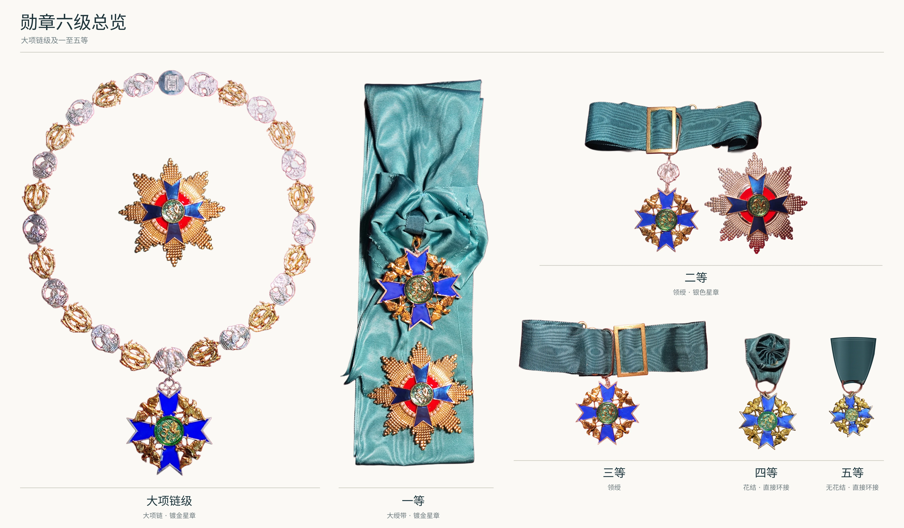

本家新闻与公告
大龙凤章全部等级设计均已制成实物
大龙凤章自大项链级至五等的全部六个等级，均已完成章体实物制作。从最初的构思与设计图稿，到如今可见、可触的章饰，完整的六级设计体系已经成为实物。
六级设计总览

从设计到实物
各级章饰沿用统一的设计语言：蓝色十字章体、金色凤凰饰件与绿色圆形龙凤徽记相互呼应，并通过链饰、大绶带、领绶及襟绶等不同形式体现等级。此次实物制作的完成，使六级体系的整体形制与细节得以同时呈现。
完整六级体系
| 等级 | 章饰构成与设计 |
|---|---|
| 大项链级 | 大项链及垂饰，配与一等相同的镀金星章。 |
| 一等 | 大绶带及章体，配镀金星章。 |
| 二等 | 领绶及章体，配银色星章。 |
| 三等 | 领绶及章体。 |
| 四等 | 绶带保留花结，以金属环直接连接章体。 |
| 五等 | 绶带不设花结，以金属环直接连接；章体较四等更小，并保留自身细节。 |